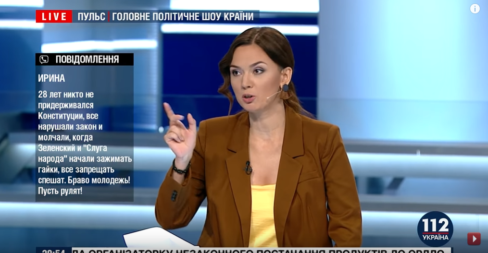

Політичне шоу "Пульс",03.09.2019
03.09.2019 відбулося політичне шоу "Пульс".Гостями студії стали:Борис Розенблат,
Олексій Якубін,Олександр Солонтай,Сергій Годний,Віктор Скаршевський,Кирило Молчанов,
Віталій Журавський,Сергій Власенко,Олександр Кочетков,Володимир Кацман та інші.Вони
обговорювали зняття депутатської недоторканності.Багато хто притримувався думки,що
це аж ніяк не змінить ситуацію в країні; інші ж навпаки,стверджували,що парламент
віднині втратив будь-який вплив на владу.До того ж,зняття проводилося з порушенням
регламенту,що уможливлює відміну закону конституційним судом.Також згадувалися
попередні спроби зняття депутатської недоторканності.